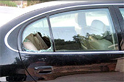

Windscreen Replacement & Repair Specialists
Professional mobile windscreen replacement and auto glass repair across Auckland, Manukau, Rodney, Franklin, and Christchurch. Most glass already in stock. 24/7 emergency service in Auckland.
 ★ Trusted Since 2008
★ Trusted Since 2008
Our Services
Complete car glass solutions for cars, vans, utes, 4x4s, buses, and trucks
Windscreen Replacement
Professional replacement of broken and cracked windscreens using high-quality glass and adhesives.
Windscreen Repair
Expert repair and replacement of cracked and damaged windscreens for all vehicle types.
Insurance Claims
We handle all paperwork and direct-bill your insurance company for a hassle-free experience.
Mobile Service
We come to you — home, office, or roadside — anywhere in our coverage areas.
Online Quote
Get a free quote online. Fill out our Glass Help Form and we will get back to you quickly.
Classic Service You Can Trust
The same reliable windscreen service New Zealanders have trusted since 2008

On-Site Mobile Service
Our experienced technicians come to your location for fast, professional windscreen and glass replacement.
All Glass Types Covered
From windscreens to rear screens, door glass to quarter glass — we stock and fit glass for every vehicle.
Areas We Cover
Serving the greater Auckland region and Christchurch
- ✓ Rodney
- ✓ Silverdale
- ✓ Auckland
- ✓ Manukau
- ✓ Franklin
- ✓ Christchurch
We provide mobile windscreen replacement and repair services throughout these areas. Our technicians come to you — at home, at work, or on the roadside.
Auckland, Rodney, Franklin & Christchurch
Car Makes We Service
Windscreen and glass replacement for all major vehicle manufacturers
Insurance Direct Billing
We handle the paperwork and bill your insurance company directly
We supply and fit glass for all major insurance companies. We direct-bill the following insurers — with most insurance companies there is usually no excess on glass, which means there is nothing for you to pay.
AA Insurance, AMI Insurance, AMP, Aon, Aon Style Cover, Ansvar, Autosure, Camper Care, China Insurance, Covi, QBE, FMG, Go Insurance, IAG, IUA, Lantern, Lumley, Mainstream, Medical Assurance, Motor & General, NAC, National Auto Club, Prestigio, Protecta, New India, NZI, ANDO, State Insurance, Swan, Vero, Zurich, and others.
Bank Insurance Partners
If your insurance is through your bank (ANZ, ASB, BNZ, Kiwi Bank, National, PSIS, Westpac, Credit Union), we take care of your damaged glass and bill your bank's insurance company directly. We handle all the paperwork.
Broker Insurance
If your insurance is through a broker, contact us with your broker's details and we will organise the glass replacement and direct-bill the insurance company.
We will arrange the replacement glass and the installer to take care of everything for you. Relax — once you call us, the hard part is over.
Why Choose Us?
Same-Day Service
Most glass is already in stock. We can often replace your windscreen on the same day you call.
Lifetime Guarantee
We guarantee your windscreen replacement installation for the life you own the vehicle, using only the best quality materials.
Mobile Service
Our installers come to your location — home, office, or roadside — anywhere in our coverage areas.
Insurance Claims
We take care of all documentation with your insurance company and bill them directly. No hassle for you.
All Vehicle Types
Cars, vans, utes, 4x4s, buses, and trucks — we replace glass for all makes and models.
24/7 Emergency Line
Our emergency glass line is available 24 hours a day, 7 days a week. Call 0800 611-731 anytime.
Need a Windscreen Replacement?
Call our 24/7 emergency line or request a free quote online. We cover Auckland, Manukau, Rodney, Franklin, and Christchurch.